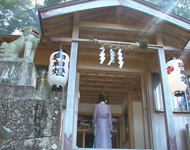
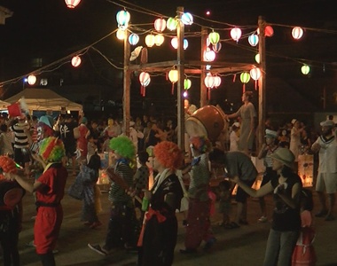
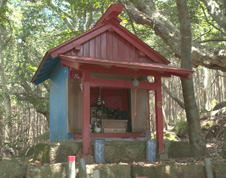

お祭り
Festival三木神社夏祭り 江戸時代に松尾大明神といい慶長19年（1614）三木里浦より移す。 「紀伊続風土記」に「次郎明神社」とあり、神社明細帳の祭神は大山咋命・市杵島姫命となっている。 旧暦6月21日に行われる。神事のほか、氏子の無病息災を祈願したお湯立てが執り行われる。
詳しく読む

盆行事
Obon盆踊り 8月14日 音頭と太鼓で踊り、踊り手は思い思いの衣装で仮装して踊る。仮装して踊ることは、80歳代のおばあさんに聞くと物心ついた時には、仮装して盆踊りを踊っていたという。
詳しく読む

文化財
Heritage名産・養殖真鯛に魚介類の燻製、椿油など、三木浦産や紀州の選りすぐりが並ぶアンテナショップ。お好み焼きやイカ焼きが食欲をそそるいい匂い！ おでんやかき氷など季節毎に楽しめます。
詳しく読む